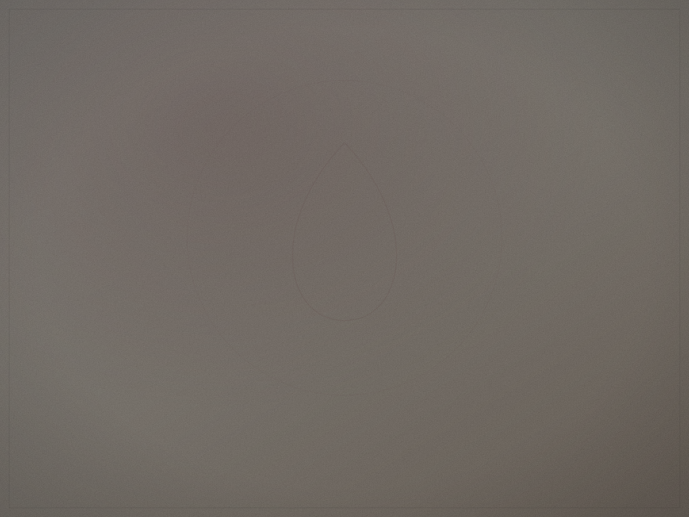

Construire une Maison avant de construire une boutique
Pourquoi Maison Mirenza a choisi de commencer par une culture de recherche, et non par un catalogue.
20.08.2026Santé menstruelle, endométriose, matières, recherche, innovation et coulisses de la Maison.

Pourquoi Maison Mirenza a choisi de commencer par une culture de recherche, et non par un catalogue.
20.08.2026Douceur, respirabilité, tenue dans le temps : ce que nous regardons avant de retenir un textile.
12.08.2026Notre approche de l’endométriose : écouter, chercher et documenter, sans promettre avant de savoir.
04.08.2026Comment nous avons réduit une décision complexe à quatre questions.
28.07.2026Recherche, validation, résultat publié : pourquoi nous distinguons chaque statut.
15.07.2026Pourquoi l’accès en pharmacie concerne des produits, sans définir la Maison.
02.07.2026